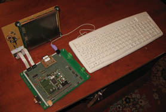
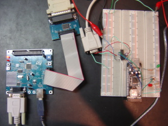

What is eLua ?
eLua
stands for Embedded Lua and the project
aims to offer the full set of features of the Lua Programming Language to the embedded world.
eLua
is not a stripped down set fo Lua; much on the contrary, it strives to offer the same features as the desktop version of Lua, but introducing specific features for embedded use.
Besides offering different flavors of the full Lua implementation
(like the possiblity of choosing between an integer-only and a floating point implementation),
a lot of work was (and will be) done in the direction of making Lua more "embedded-friendly" by augmenting the core language with features that allow lower memory requirements.
Lua is the perfect example of a
minimal, yet fully
functional language. Although generally advertised as a "scripting
language" (and used accordingly especially in the game industry), it is
also fully capable of running stand-alone programs. Its limited
resource requirements make it suitable to a lot of microcontroller
families. The intrinsic high portability of the original Lua code (which is ANSI C and runs virtually on every platform for which an ANSI C compiler is available) combined with the highly portable software architecture of eLua allow for easy porting of the project to a large variety or architectures. The peripheral access libraries exported by eLua are also portable by design, so one could run a Lua program (without or with very few modifications) on every eLua supported platform (the project roadmap shows a constantly growing list of platforms on which eLua is supported). eLua inherits the minimalistic and functional design of Lua, staying in line with the well known KISS (Keep It Small and Simple) philosophy.
The aim of the project is to have a fully functional Lua development
environment on the microcontroller itself,
without the need to install a specific development environment on the PC side. This includes the ability to both edit and debug programs directly on target.
Initially, a PC will still be needed in order to edit the Lua programs
for the microcontroller. But as the project evolves this requirement
will be relaxed, as a basic editor (also residing on the
microcontroller) will be usable with a variety of input/output devices.
We can't end this short presentation without presenting our project motto: no matter what you do with eLua, always remember to have fun with it :)
Features
As already stated, eLua allows you to run Lua completely on
the
target microcontroller. A fast-growing set of complementary modules is also
provided, for Lua programming eLua's generic (portable) peripherals.
The following important features are ready or being implemented:
- a flexible, configurable build system.
- access to the Lua interpreter on the target MCU via a variety of physical transports (RS-232 being the most popular).
- a (mostly) platform independent peripheral library (PIO,
UART, PWM, SPI, TMR, ADC, NET, I2C...)
- a very low footprint embedded ROM file system, easy to port to different types of memory chips and other storage devices
- a small FAT R/W file system layer for SD cards
- an embedded editor, to edit Lua programs directly via a serial connection or other input devices
- a minimal "shell" (for file operations, environment configuration and other facilities)
- network support
- an embedded http server
- Terminal / Console over Ethernet
- debugging (directly on the MCU or remotely with the PC).
For more information about the functionality (implemented and planned) in eLua check the status page.
Porting eLua to another compatible platform should be as easy
and
painless as possible. Currently this is restricted to platforms for
which the gcc+newlib combo is available. This restriction will disappeaer in the near future, as eLua will have its own libc and thus it will be available on a much
broader range of MCUs.
The Lua implementation comes in two flavors: "regular Lua"
(using
floating point as the number type) and "integer Lua" (using integers).
"Regular Lua" will be able
to perform floating point operations (but will be slower because the
floating point operations will be emulated in software on the MCU),
while "integer Lua" will only be able to perform operations with
integer numbers (but support for fixed and even floating point can be
added with separate modules) and thus will be faster.
Audience
eLua has a wide and varied audience, starting from newcomers to the embedded world who want an
easy and powerful environment for prototyping, rapid application
development and quick production, and ranging towards highly skilled developers
that want to extend their programs with the Lua library facilities and
portable features.
eLua
allows embedded-oriented programmers to use the simplicity and
power of the Lua programming language and to hide the low-level
complexities and platform/architecture-dependent features. With eLua, the programmer can focus on the actual implementation of his program, without having to worry about accessing the low-level peripheral configuration and data registers, as the platform libraries already take care of this. This increases productivity and eliminates the often frustrating task of dealing with platform-specific drivers.
The list below summarizes eLua's target audience:
- Embedded developers that are looking for a fast, easy to use and powerful way of coding.
- First-time
embedded programmers (or simply first time programmers) that are
looking for an easy way to "dive" into the embedded programming world.
eLua is a great learning tool.
- People that aren't really
developers, but want to be able to prototype an embedded system
fast and painless, without having to learn C for that.
- Embedded
developers that need powerful meta-language mecanisms for complex code
algorithms and data description.
- Field
engineers that can go their customer site and debug an eLua module on
site, without any preparation at all, since the whole development
environment resides on chip already.
Authors
eLua is a joint project of Bogdan Marinescu,
a software developer from Bucharest (Romania) and Dado Sutter,
head of the Led Lab at PUC-Rio
University, in Rio de Janeiro (Brazil).
Its origins come from the ReVaLuaTe
project also developed by Bogdan Marinescu (as a contest entry for the
2005 Renesas M16CDesign Contest), and the Volta Project, managed by
Dado Sutter at PUC-Rio from 2005 to 2007.
eLua is an Open Source and
collaborative project and an always growing list of collaborators can
be found in our Credits
Page
| ReVaLuaTe Project | Volta Project |
|  |  |
Contacts
eLua authors can be contacted at:
Bogdan Marinescu: bogdan dot marinescu at gmail dot com
Dado Sutter: dadosutter at gmail dot com
You are also welcomed to share your questions and suggestions on our Mail Discussion List
License
eLua is Open Source and is freely
distributed under the GPL (migrating to BSD soon) licence.
The Lua code (with all the eLua specific changes) is included in the source tree and is, of course, licensed under the same MIT license that Lua uses.
There are other components with different licenses in eLua, see the file COPYING in the source distribution for details.
The terms of each of these licences can be viewed on their own
pages at:
GPL
Licence
BSD
Licence
MIT
Licence